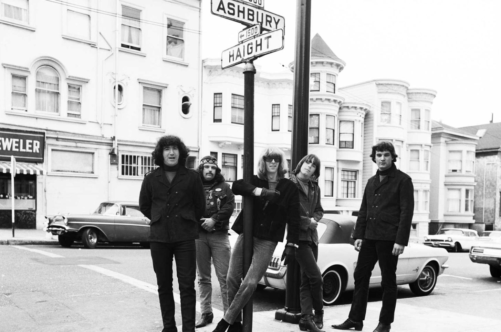
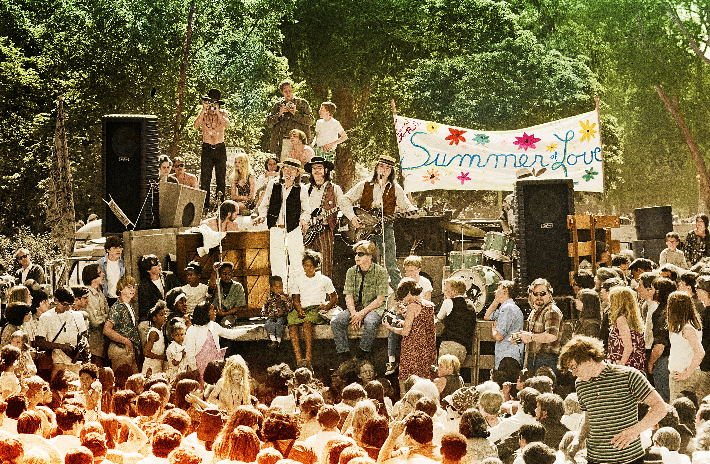
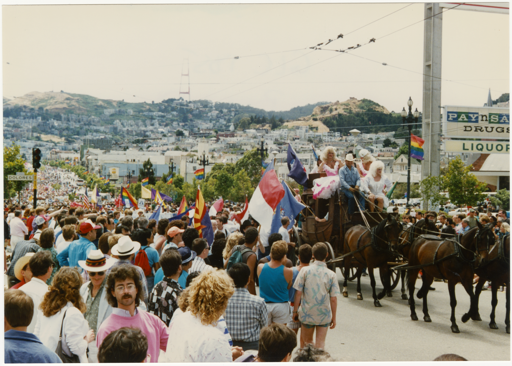
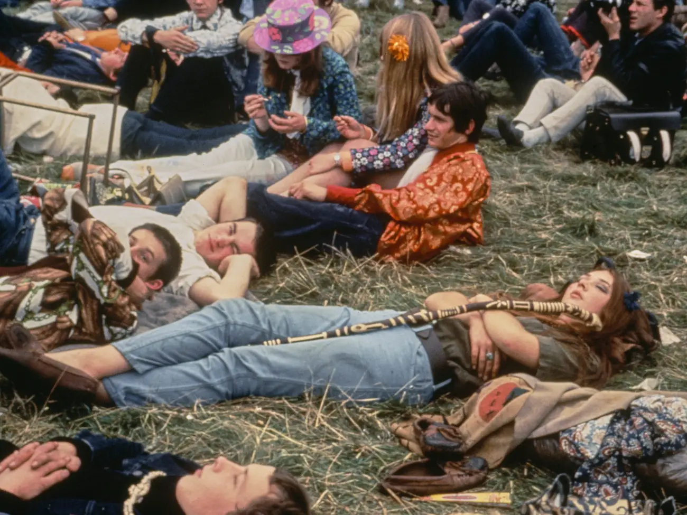

Keep on dancing through the daylight
Greet the morning air with song
No one's noticed, but the band's all
packed and gone
Was it ever there at all?
But they kept on dancing
“The Music Never Stopped”
The Grateful Dead
First performed at Great
American Music Hall, 1975
San Francisco has a rich music history, best known for its counter culture, psychedelic, Summer of Love in the 1960s and 70s that brought thousands of young people to the city. It’s where the Grateful Dead and Jefferson Airplane rose to fame at notable stages like the Fillmore Auditorium and Avalon Ballroom. It was also the birthplace of Rolling Stone magazine, cementing San Francisco's place in American music history. But the city's musical identity extends far beyond psychedelic rock, shaped by generations of jazz, punk, queer nightlife, electronic music, and countless underground scenes. Music has long been central to San Francisco's identity, bringing people together and providing a space for creative expression, political resistance, and community.




But today, people say San Francisco is dead. Its artists have left, its culture has disappeared, and its once-vibrant music scene has been replaced by tech offices and increasingly expensive apartments. But the city’s music scene has gone through cycles of displacement and reinvention throughout its history. In the 1960s, urban renewal programs pushed out Black-owned jazz clubs in the Fillmore District. The late 20th century dot-com boom once again gentrified neighborhoods like South of Market and the Mission District. The COVID-19 pandemic shuttered live music from 2020-2021. Now, the Silicon Valley AI boom is skyrocketing rents, making San Francisco one of the most expensive rental markets in the country.
But if San Francisco's music scene is dead, why is there still so much music?
Despite this though, many independent venues are still preserving the counterculture, nostalgic music that put SF on the musical map through community support, activism, and resilience. And communities of musicians, bartenders, and neighbors are rallying to protect the local venues that they care about. Historic venues like Mabuhay Gardens, a cornerstone of San Francisco's 1970s and 80s punk scene, are the subject of revival efforts decades after closing. Other venues, like the queer nightclub Oasis and the beloved Bottom of the Hill, have found new paths forward through changes in ownership. When the Stud, one of San Francisco's oldest queer bars, faced closure, a collective of nightlife professionals came together to purchase and preserve it, eventually establishing a worker-owned cooperative.
The music scene isn’t disappearing, but it is being reshaped, and who is participating in it has changed. Oftentimes, the new owners or donors are retired tech workers or investors who grew up with these venues. And the scene is blurring, with tech workers by day, running venues or DJing by night. Still, survival is rare, and it’s not guaranteed. The fact that so many venues depend on extraordinary acts of community support, wealthy benefactors, or volunteer labor to survive raises another question: should keeping music alive in San Francisco have to be this difficult? Rising rents, operating costs, declining alcohol sales, the loss of rehearsal spaces, and the growing influence of major concert promoters push out many local, independent venues and bands who cannot compete. While some spaces are saved through community organizing or new investment, others disappear without a replacement. San Francisco's resilience should not obscure the very real pressures threatening its cultural spaces. Perhaps the question, then, is not whether San Francisco's music scene is dead, but what it takes to keep it alive, and who gets to be part of it.
Rather than focusing on the venues San Francisco has lost, this site is a collection of San Francisco's currently operating music venues and the stories of the people, communities, and movements that have kept them alive. Together, they form a portrait of a music scene that continues to change, adapt, and make space for something new.
Live music exists all around the city, beyond the famous stages and historic concert halls. It can be found in parks, cafés, record stores, art galleries, churches, nightclubs, and basement dive bars. Some have been running for generations and others are just getting started.
And perhaps the simplest way to help keep them alive is to go out and see a show.
Find a venueDo you live in San Francisco and know of a venue I am missing? Please submit it via this form!
FormEach postcard on this site was created with a generative system that inputs venue data along with parameters I created to create a unique image. Learn more about the data visualization behind the system and create your own.
Create Your OwnThis project was also turned into a 300 page book. TBD on publishing.
See the Book